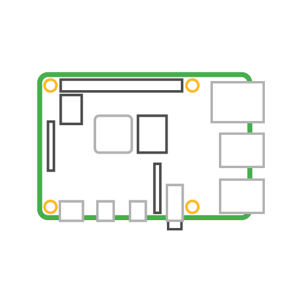
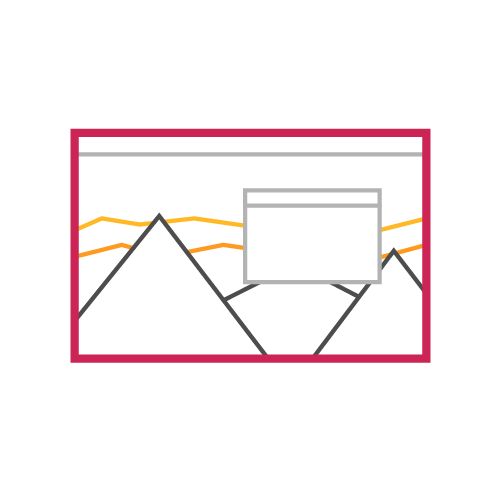
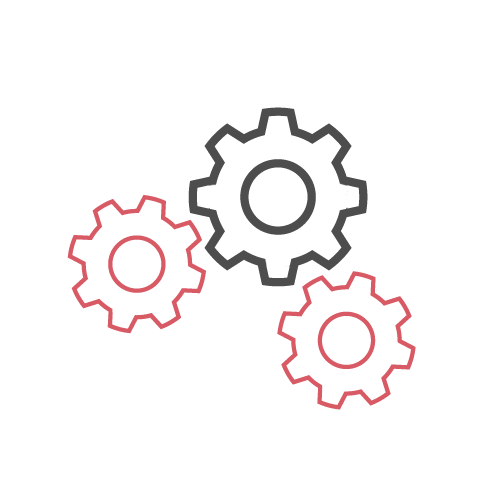
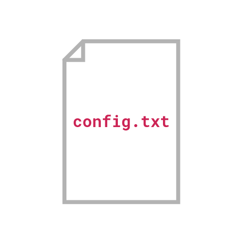
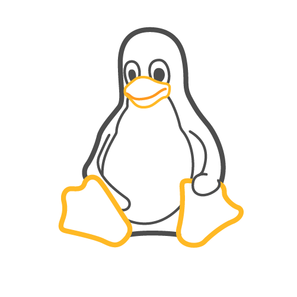
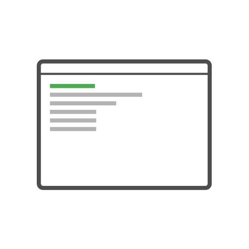
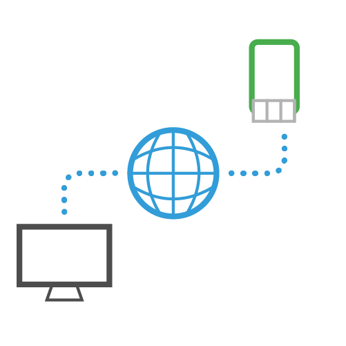
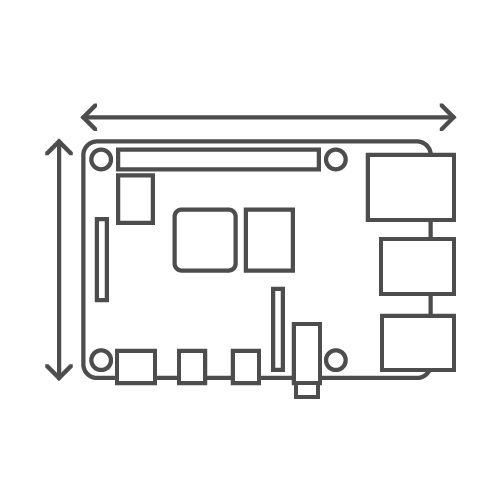
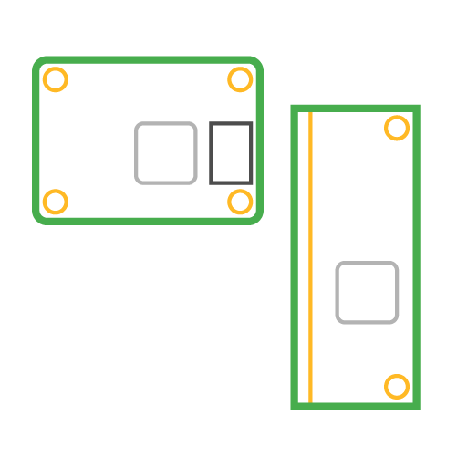

Inicio
Hardware
Software
Documentacion
Contacto
Documentacion Raspberry Pi
La documentación oficial de Computadoras Raspberry Pi y microcontroladores
Computadoras
Accesorios
Microcontroladores

Empezando
Este es el material sobre cómo empezar

Sistema operativo Raspberry Pi
El sistema operativo oficial de Raspberry Pi

Configuración
Configuración de los ajustes de Raspberry Pi para satisfacer sus necesidades

El archivo config.txt
Control de bajo nivel de la configuración de su Raspberry Pi

El núcleo de Linux
Cómo configurar y construir un kernel personalizado para su Raspberry Pi

Usando linux
Cómo usar la línea de comandos de Linux desde Raspberry Pi OS

Acceso remoto
Acceder a tu Raspberry Pi de forma remota

Hardware de Raspberry pi
Información técnica sobre el hardware de Raspberry Pi

Hardware del módulo de cómputo
Información técnica sobre el hardware del módulo de cómputo de Raspberry Pi